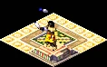
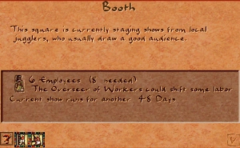
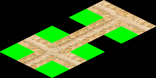

Booth

The Booth is the smallest and cheapest entertainment venue. It hosts jugglers trained at a Juggler School and, once visited, sends a juggler out to roam the surrounding streets and entertain nearby houses.
Entertainment is one of the services basic houses need to evolve, and the Booth is the most space- and cost-efficient way to provide it. It is enough to lift the simplest housing, but for more sophisticated dwellings — and a higher Culture rating — you will also need Bandstands and Pavilions.
A Booth is a 2×2 structure laid down over a small plaza. It must touch a road, and like the Bandstand and Pavilion it may be placed directly on a road bend or intersection.
Booth
- Cost (Normal)
- 40 Db
- Cost by difficulty
- VE 10 · Easy 20 · Normal 40 · Hard 80 · VH 150
- Labor category
- Entertainment
- Entertainer
- Juggler
- Requires
- A staffed Juggler School
- Fire / Damage risk
- Low / Low
Desirability profile
- Peak value
- +2 at the building
- Falloff
- −1 per step, over 2 tiles
- Range
- 2 tiles
A Booth slightly raises the desirability of the tiles immediately around it — a small bonus compared with the entertainment access it grants to nearby housing.
Overview
Street performers were a familiar sight in the towns of ancient Egypt. Jugglers, acrobats and tumblers entertained crowds at markets and festivals, tossing balls, clubs and knives to the delight of onlookers. In the game, the Booth captures the humblest form of this entertainment: a simple stage where a passing juggler stops to put on a show.
Entertainment in Akhenaten works as a chain of buildings. A school trains a performer, the performer walks to a venue, and the venue then sends entertainers out into the surrounding streets so that houses with road access receive the service. The Booth sits at the bottom of that chain — small, cheap, and limited to jugglers — but it is the workhorse that keeps the entertainment requirement satisfied across most residential districts.
Mechanics
What the Booth does
A Booth on its own does nothing. It must first be visited by a juggler walking from a Juggler School. Each visit tops up the Booth's internal juggler counter. While that counter is above zero the Booth:
- runs a show (a juggler animation plays on the stage), and
- spawns its own roaming juggler who walks the nearby roads, delivering the entertainment service to every house she passes.
The counter ticks down over time, so a Booth needs a steady supply of jugglers from its school to keep performing. If the school stops sending jugglers — because it lost workers, lost road access, or was demolished — the Booth eventually goes quiet and stops serving houses.
Coverage and housing evolution
The entertainment a Booth provides is enough to evolve basic housing. Higher housing tiers demand richer entertainment (musicians and dancers), which only Bandstands and Pavilions can supply. Plan a city so that humble neighbourhoods are covered by Booths, while you reserve the larger, more expensive venues for the districts you want to grow into elite housing.
Info window
Right-clicking a Booth opens its info window, which shows the number of workers employed, whether a juggler is currently performing, and the entertainment it is providing to the surrounding area. Use it to confirm a Booth is staffed and actively serving houses.

Entertainment chain
Juggler School → trains a juggler who walks the roads↳
Booth → juggler arrives, Booth begins shows↳
roaming juggler → walks nearby streets↳
House → gains entertainment access
Both legs of this journey are on foot and on roads, so road layout matters twice: once for the school's juggler reaching the Booth, and again for the Booth's juggler reaching the houses. A break anywhere in the chain stops the service.
Placement
A Booth occupies a 2×2 footprint and is built on top of a plaza that the game lays automatically beneath it. Placement rules:

- The Booth must touch a road so that jugglers can arrive and leave.
- Unlike most buildings, a Booth (like the Bandstand and Pavilion) can be placed directly on a road bend or intersection — the road passes underneath it. This lets you drop a venue onto an existing junction without rerouting traffic.
- When you try to place a Booth without any Juggler School in the city, the game shows a warning reminding you to build one first — the Booth will sit idle until a school exists to staff it.
Tips
- Always build a Juggler School before — or together with — your first Booths. A Booth with no school never performs.
- Place a Booth on a road bend rather than a 4-way crossroads. Roaming jugglers choose randomly at each junction, so a bend gives more predictable, less wasteful coverage of the houses you actually want served.
- The Booth is the cheapest way to satisfy the entertainment need of basic housing. Blanket poorer districts with Booths and save Bandstands and Pavilions for the neighbourhoods you intend to push to higher tiers.
- One Juggler School can feed several Booths. Spread the Booths so their roaming jugglers cover different streets instead of overlapping.
- If houses report "no entertainment" despite a nearby Booth, trace the road from the school to the Booth and from the Booth to the houses — a missing road link, lost workers, or a dead-end street is the usual culprit.
Developer reference
All paths relative to the repository root.
Building config — src/scripts/building/booth.js
src/scripts/building/booth.js defines building_booth and its placement check. The cost array is indexed by difficulty (VE · Easy · Normal · Hard · VH).
building_booth {
animations {
booth { pack:PACK_GENERAL, id:114 },
square { pack:PACK_GENERAL, id:112 }, // underlying plaza
juggler { pos [35, 17], pack:PACK_SPR_AMBIENT, id:7, offset:-1 }
}
min_houses_coverage : 100
labor_category : LABOR_CATEGORY_ENTERTAINMENT
meta { help_id:71, text_id:72 }
building_size : 2
cost [ 10, 20, 40, 80, 150 ]
desirability { value[2], step[1], step_size[-1], range[2] }
laborers[8]
fire_risk[4]
damage_risk[2]
flags { is_entertainment: true }
}
// Warns the player if no Juggler School exists to staff the Booth
[es=(building_booth, on_place_checks)]
function building_booth_on_place_checks(ev) {
var has_juggler_school = city.count_active_buildings(BUILDING_JUGGLER_SCHOOL) > 0
city.warnings.show_if_not(has_juggler_school, "#build_juggling_school")
}C++ implementation — src/building/building_booth.h / .cpp
src/building/building_booth.h declares building_booth (inherits building_entertainment), registered with BUILDING_METAINFO(BUILDING_BOOTH, …). Its overlay is OVERLAY_BOOTH and get_fire_risk() returns value / 10. Key behaviour in building_booth.cpp:
spawn_figure()— when the Booth has been visited (runtime_data().juggler_visited > 0), creates a roamingFIGURE_JUGGLER(actionACTION_94_ENTERTAINER_ROAMING) from the juggler slot, gated bymin_houses_coverage.update_day()— decrementsjuggler_visitedand countsnum_showsfor that day; this is what makes the venue depend on a steady stream of visiting jugglers.update_month()— randomisesplay_index(0–9) for show-animation variety.on_place_update_tiles()— lays the underlying plaza viamap_add_venue_plaza_tiles()and attaches the booth part to the correct corner withplace_latch_on_venue(BUILDING_BOOTH, …)based on orientation.draw_ornaments_and_animations_height()— draws the juggler performing on the stage whilejuggler_visitedis set.preview::ghost_allow_tile()— allows placement on road tiles (venue may sit on a road) or any tile with no figure on it.
Juggler figure — src/figuretype/figure_juggler.cpp
src/figuretype/figure_juggler.cpp implements FIGURE_JUGGLER, the roaming entertainer the Booth sends out. It walks road tiles from the venue and marks houses it passes as having entertainment access. The matching overlay that highlights Booth coverage lives in src/overlays/city_overlay_juggler.cpp.